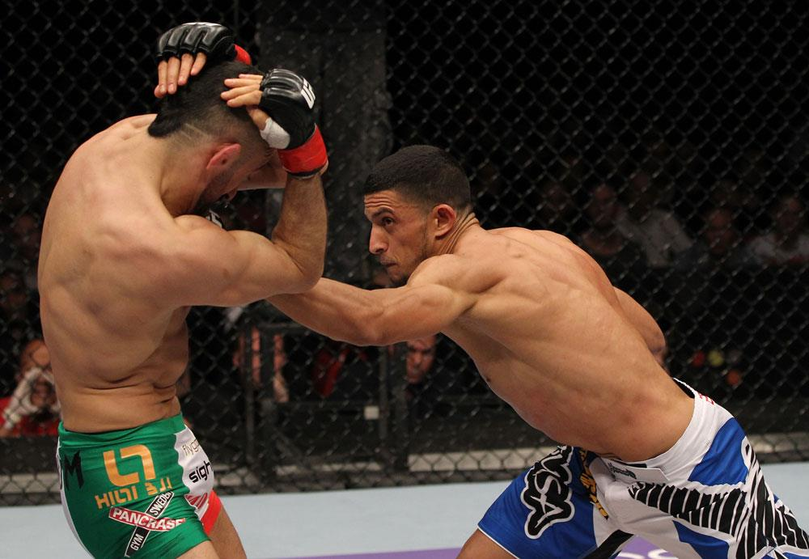

O UFC parece simples para quem assiste pela primeira vez: dois atletas entram no Octógono e tentam vencer usando golpes em pé, quedas, controle no chão e finalizações. Por trás dessa dinâmica, porém, existe um conjunto detalhado de regras que determina o tempo de luta, a pontuação, as formas de vitória, os limites de peso e as técnicas proibidas.
Compreender essas regras muda completamente a experiência de assistir a um evento. Uma queda, por exemplo, não vale uma quantidade fixa de pontos. Permanecer por cima no chão também não garante automaticamente a vitória no round. O que os juízes procuram é a efetividade das ações ofensivas, especialmente o impacto produzido pelos golpes e pelo grappling.
Também é importante separar dois conceitos frequentemente confundidos. MMA é o esporte. UFC é uma organização que promove os eventos. Da mesma forma que existem diferentes campeonatos de futebol, existem diversas organizações de artes marciais mistas, cada uma com seus atletas, cinturões e eventos.
MMA é a sigla para Mixed Martial Arts, ou artes marciais mistas. Trata-se de uma modalidade que combina técnicas de diferentes esportes de combate, como boxe, muay thai, wrestling, jiu-jítsu, judô, caratê e kickboxing.
O UFC, sigla de Ultimate Fighting Championship, é uma empresa promotora de eventos de combate. Portanto, UFC e MMA não são sinônimos: o atleta pratica MMA e pode competir no UFC.
Em seus eventos, o UFC segue as Regras Unificadas do MMA e as determinações da comissão atlética responsável pela regulamentação do local onde o card é realizado. A redação oficial atual das Regras Unificadas contempla duração dos rounds, critérios de julgamento, faltas, equipamentos, procedimentos médicos e formas de encerramento da luta.
Como funciona uma luta
Em pé, os competidores utilizam socos, chutes, joelhadas e cotoveladas dentro dos limites permitidos. No clinch, eles lutam agarrados, normalmente junto à grade, tentando aplicar golpes curtos, controlar a posição ou preparar uma queda.
No chão, entram em cena o ground and pound, as passagens de guarda, as raspagens, o controle posicional e as tentativas de finalização. Estrangulamentos e chaves articulares podem encerrar a luta imediatamente quando o adversário desiste, perde a consciência ou sofre uma lesão que impede a continuidade.
A função do árbitro central é controlar a ação, interromper faltas, avaliar a capacidade de defesa dos lutadores e parar o combate quando houver risco desnecessário. Pelas Regras Unificadas, o árbitro é a única pessoa autorizada a encerrar oficialmente a luta durante a ação, embora o médico e o córner possam provocar uma interrupção pelos procedimentos correspondentes.
Quantidade de rounds
Uma luta comum do UFC é programada para três rounds de cinco minutos. As disputas de cinturão e, em regra, as lutas principais dos eventos são programadas para cinco rounds de cinco minutos.
Entre os rounds existe um intervalo de um minuto. Assim, uma luta de três rounds pode chegar a 15 minutos de combate, enquanto uma luta de cinco rounds pode atingir 25 minutos.
O padrão é:
- Luta comum: três rounds de cinco minutos
- Luta principal: cinco rounds de cinco minutos
- Disputa de cinturão: cinco rounds de cinco minutos
- Intervalo: um minuto entre os rounds
O UFC pode programar uma luta sem cinturão para cinco rounds, sobretudo quando ela ocupa o evento principal. Em situações especiais, outras lutas também podem receber essa duração. As Regras Unificadas permitem combates profissionais com até cinco rounds e estabelecem o limite máximo de 25 minutos de luta.
A pontuação
Quando não há nocaute, nocaute técnico, finalização, desclassificação ou outro encerramento antecipado, a luta vai para a decisão dos juízes.
Normalmente, três juízes avaliam cada round separadamente por meio do sistema conhecido como 10-Point Must System. O vencedor do round recebe dez pontos, enquanto o perdedor recebe nove ou menos. Um round completamente equilibrado pode ser pontuado como 10 a 10, mas isso é raro.
As pontuações mais importantes são:
- 10 a 9: um lutador venceu o round por margem pequena ou moderada
- 10 a 8: um lutador venceu por grande margem, produzindo dano, domínio e duração ofensiva relevantes
- 10 a 7: um lutador dominou completamente o adversário durante o round
- 10 a 10: não houve vantagem perceptível para nenhum dos dois
Em uma luta de três rounds, um placar de 29 a 28 significa, normalmente, que determinado lutador ganhou dois assaltos e perdeu um. Um resultado de 30 a 27 indica que ele venceu os três rounds por 10 a 9. Caso consiga um round 10 a 8, pode aparecer uma pontuação como 29 a 27.
Nas lutas de cinco rounds, são comuns placares como 48 a 47, quando um atleta vence três rounds e perde dois, ou 50 a 45, quando ganha os cinco por 10 a 9. Deduções aplicadas pelo árbitro também modificam o resultado final.
O que os juízes analisam
O principal critério é a efetividade da luta em pé e do grappling. Isso significa avaliar o resultado das ações ofensivas, e não apenas contar golpes, quedas ou minutos de controle.
Na prática, os juízes observam principalmente:
- Dano ou efeito produzido por golpes legais
- Knockdowns e golpes que alteram claramente o comportamento do adversário
- Tentativas de finalização realmente perigosas
- Quedas que geram consequência ofensiva
- Passagens, reversões e posições vantajosas usadas para atacar
- Domínio ofensivo
- Tempo durante o qual a ofensividade efetiva foi mantida
O dano é o componente mais valorizado. Um lutador que acerta menos golpes pode vencer o round caso suas ações sejam mais contundentes e tenham maior efeito sobre o oponente. Golpes que provocam knockdowns, cortes, inchaços, perda de equilíbrio, redução da capacidade física ou necessidade imediata de defesa possuem grande peso na avaliação.
A agressividade efetiva aparece como critério secundário. Ela representa a iniciativa consistente para atacar e buscar o fim da luta. O controle da área de combate, como pressionar o adversário contra a grade ou determinar onde a ação acontece, ocupa um nível posterior.
Agressividade e controle do Octógono só devem decidir o round quando os juízes não conseguem identificar vantagem na efetividade dos golpes e do grappling. Apenas andar para a frente não significa vencer. Da mesma maneira, recuar e contra-atacar com maior impacto pode ser suficiente para ganhar o assalto.
As quedas
Não existe uma pontuação fixa para. O MMA não funciona como um sistema no qual cada takedown vale dois ou três pontos.
A queda é avaliada pelo efeito que produz. Derrubar o adversário, avançar de posição, aplicar golpes e criar uma finalização perigosa representa uma sequência ofensiva relevante. Derrubar e permanecer parado, sem ataques ou progressão, tem valor muito menor.
O mesmo raciocínio vale para o controle no chão. Ficar vários minutos por cima não garante o round se o lutador não produz golpes, tentativas de finalização ou avanço posicional. As orientações atuais destacam que apenas manter uma posição dominante não deve ser o fator principal; os juízes precisam avaliar o que o atleta fez com essa posição.
Decisão unânime, dividida ou majoritária
Cada juiz entrega seu próprio placar. O resultado depende da combinação dos três cartões.
Decisão unânime:
Acontece quando os três juízes apontam o mesmo lutador como vencedor. Os placares individuais não precisam ser iguais. Um juiz pode marcar 30 a 27 e os outros dois, 29 a 28, desde que todos escolham o mesmo vencedor.
Decisão dividida:
Ocorre quando dois juízes dão a vitória para um lutador e o terceiro escolhe o adversário. Um competidor pode vencer, por exemplo, com dois cartões de 29 a 28, enquanto o rival recebe um cartão de 29 a 28.
Decisão majoritária:
Dois juízes apontam o mesmo vencedor, enquanto o terceiro marca empate. Um exemplo seria 29 a 28, 29 a 28 e 28 a 28.
Também existem empates. No empate majoritário, dois juízes marcam igualdade e o terceiro escolhe um vencedor. No empate dividido, um juiz escolhe cada lutador e o terceiro registra empate.
Nocaute e nocaute técnico
O nocaute, identificado pela sigla KO, acontece quando um golpe legal deixa o lutador sem condições imediatas de continuar. O caso mais evidente ocorre quando o atleta perde a consciência, mas também pode haver nocaute quando ele fica incapaz de se defender de maneira inteligente após o golpe.
O nocaute técnico, ou TKO, acontece quando o combate é interrompido para proteger um atleta que ainda pode estar consciente, mas não está se defendendo adequadamente ou não tem condições seguras de continuar.
O TKO pode ocorrer por:
- Interrupção do árbitro após uma sequência de golpes
- Interrupção médica
- Corte ou lesão
- Interrupção solicitada pelo córner
- Lutador que não retorna para o round seguinte
A diferença central está na situação do competidor. No KO, ele geralmente fica completamente incapacitado pela ação. No TKO, a luta é encerrada preventivamente porque sua defesa deixou de ser inteligente ou porque uma condição física tornou a continuidade insegura.
As finalizações
A finalização ocorre quando um lutador aplica um estrangulamento ou uma chave e obriga o adversário a desistir.
A desistência pode ser indicada por tapas no corpo do oponente ou no chão, pelo chamado “tap”. Ela também pode ser verbal, quando o competidor informa ao árbitro que não consegue continuar ou grita de dor.
Existe ainda a finalização técnica. Ela acontece quando a técnica provoca inconsciência, fratura, luxação ou outra consequência que exige o encerramento mesmo sem desistência consciente. Um atleta que apaga em um estrangulamento, por exemplo, perde por finalização técnica.
Outras formas de terminar uma luta
Além de decisão, KO, TKO e finalização, o combate pode acabar por:
Desclassificação: aplicada quando uma falta intencional causa uma lesão grave, quando há reincidência ou quando o lutador ignora claramente as regras e as ordens do árbitro.
No contest: significa “sem resultado”. Pode ocorrer quando uma falta acidental provoca o encerramento antes de haver rounds suficientes para recorrer aos cartões, entre outras situações previstas pela regulamentação.
Decisão técnica: pode ser utilizada quando uma falta acidental impede a continuidade depois que uma parte mínima da luta já foi concluída. Nesse caso, os cartões dos juízes determinam o vencedor.
Empate técnico: pode surgir em determinadas interrupções por falta quando os cartões não permitem apontar um vencedor.
As consequências dependem do momento da interrupção, da intenção da falta e da regulamentação da comissão atlética responsável pelo evento.
Categorias de peso do UFC
As divisões existem para evitar diferenças excessivas de tamanho entre os competidores. Na estrutura regular atual, o UFC possui oito categorias masculinas e três femininas em suas páginas de rankings e campeões.
Masculino:
- Peso-mosca: até 125 libras, aproximadamente 56,7 kg
- Peso-galo: até 135 libras, aproximadamente 61,2 kg
- Peso-pena: até 145 libras, aproximadamente 65,8 kg
- Peso-leve: até 155 libras, aproximadamente 70,3 kg
- Peso meio-médio: até 170 libras, aproximadamente 77,1 kg
- Peso-médio: até 185 libras, aproximadamente 83,9 kg
- Peso meio-pesado: até 205 libras, aproximadamente 93 kg
- Peso-pesado: até 265 libras, aproximadamente 120,2 kg
Feminino:
- Peso-palha: até 115 libras, aproximadamente 52,2 kg
- Peso-mosca: até 125 libras, aproximadamente 56,7 kg
- Peso-galo: até 135 libras, aproximadamente 61,2 kg
O UFC também já promoveu disputas no peso-pena feminino, com limite de 145 libras. A divisão, porém, não aparece atualmente entre as categorias regulares das páginas de rankings e campeões da organização.
A pesagem
Os atletas passam pela pesagem oficial antes do evento. Em lutas sem cinturão, é permitido pesar até uma libra acima do limite normal da categoria.
Isso significa que um peso-leve pode marcar até 156 libras em uma luta comum. Em uma disputa de cinturão, porém, o limite precisa ser respeitado sem essa tolerância: o atleta deve pesar no máximo 155 libras.
A mesma lógica vale para as demais divisões. Um peso-mosca pode pesar 126 libras em uma luta comum, mas precisa registrar 125 ou menos quando o cinturão está em jogo.
Quando um lutador não bate o peso, diferentes medidas podem ser adotadas:
- Perda de uma porcentagem da bolsa para o adversário
- Continuidade da luta em peso casado
- Cancelamento do confronto
- Alteração das condições de uma disputa de cinturão
- Retirada ou vacância do título em situações específicas
A decisão depende da diferença registrada, do acordo entre as partes, da avaliação médica, da comissão atlética e da organização.
As disputas de cinturão
Cada categoria possui um campeão reconhecido pela organização. O UFC escolhe os desafiantes considerando posição no ranking, sequência de resultados, desempenho, disponibilidade, interesse esportivo e planejamento dos eventos.
A disputa de cinturão é programada para cinco rounds. Para conquistar o título, o desafiante precisa vencer por decisão, nocaute, nocaute técnico, finalização ou desclassificação. Em caso de empate, o campeão normalmente mantém o cinturão, pois não houve vitória do desafiante.
Quando o título está vago, dois atletas disputam a condição de novo campeão. A vacância pode ocorrer por aposentadoria, mudança de categoria, renúncia, longo período de inatividade, descumprimento de obrigações ou decisão da organização.
Também existe o cinturão interino. Ele costuma ser criado quando o campeão linear permanece indisponível e o UFC decide manter a categoria em movimento. O campeão interino geralmente enfrenta o campeão principal posteriormente em uma luta de unificação.
O cinturão interino não deve ser confundido com um simples prêmio simbólico. Ele representa um campeonato reconhecido pela organização, embora subordinado à existência de um campeão linear ou incontestável.
Os golpes proibidos
O MMA permite uma grande variedade de ataques, mas não é uma modalidade sem regras. As Regras Unificadas apresentam uma lista extensa de faltas destinadas a proteger os competidores.
Entre as principais ações proibidas estão:
- Dar cabeçada
- Colocar os dedos nos olhos
- Avançar com os dedos estendidos em direção ao rosto do adversário
- Morder ou cuspir no oponente
- Puxar o cabelo
- Colocar dedos na boca, nariz, orelhas, cortes ou outras cavidades
- Atacar a garganta ou agarrar a traqueia
- Golpear a coluna ou a parte de trás da cabeça
- Atacar a região genital
- Chutar ou dar joelhada na cabeça de um oponente no chão
- Pisar em um adversário caído
- Projetar intencionalmente o oponente sobre a cabeça ou o pescoço no movimento conhecido como pile-driving
- Torcer dedos individuais
- Segurar a luva ou o calção do adversário
- Agarrar a grade para impedir uma queda ou mudar de posição
- Atacar depois do sinal de encerramento do round
- Atacar durante uma pausa
- Golpear um adversário que já está sob os cuidados do árbitro
- Ignorar deliberadamente as ordens do árbitro
- Receber interferência indevida do córner
Empurrar a grade com a mão ou apoiar o pé nela pode ser permitido. O que configura a falta é agarrar a estrutura com os dedos das mãos ou dos pés para controlar a própria posição ou impedir a movimentação do adversário.
Pelas Regras Unificadas atuais, um competidor é considerado no chão quando qualquer parte do corpo, além das mãos ou dos pés, está em contato com o piso.
Isso significa que apoiar apenas uma ou as duas mãos no chão não transforma automaticamente o atleta em um oponente caído. Um joelho, antebraço, cotovelo, quadril ou outra parte do corpo no piso caracteriza a posição.
A definição é fundamental porque joelhadas e chutes na cabeça de um oponente no chão são proibidos. Joelhadas e chutes no corpo podem ser legais, desde que não atinjam outra área proibida. Como eventos podem estar sujeitos à adoção específica da comissão local, árbitros e atletas recebem orientações antes de cada card.
Cotovelada de cima para baixo
A cotovelada conhecida como “12 para 6”, executada em trajetória vertical de cima para baixo, foi durante muitos anos uma falta nas Regras Unificadas. Essa proibição foi retirada da redação atual após mudanças aprovadas em 2024.
Por isso, o golpe não aparece na lista vigente de faltas das Regras Unificadas de 2025. Isso não significa que qualquer cotovelada seja permitida: o ataque continua ilegal quando atinge nuca, coluna, garganta ou um adversário depois da interrupção.
Também é necessário considerar a regulamentação adotada pela comissão que sanciona o evento, pois mudanças nas regras podem ser implementadas em momentos diferentes conforme a jurisdição.
O que ocorre numa falta
O árbitro pode advertir o infrator, interromper a ação, retirar pontos ou desclassificar o lutador. A punição considera a intenção, a gravidade, a reincidência e a influência que a infração teve sobre o combate.
Em casos de golpe na região genital ou dedo no olho, o atleta atingido pode receber até cinco minutos para se recuperar. O médico pode ser chamado para avaliar sua visão, o corte ou a condição física.
Se uma falta intencional causar uma lesão grave e impedir imediatamente a continuidade, o responsável pode perder por desclassificação. Se a falta for acidental, o resultado dependerá do número de rounds concluídos. A luta pode terminar sem resultado ou seguir para uma decisão técnica baseada nos cartões.
Por que conhecer as regras muda a forma de assistir as lutas
Quem entende a pontuação deixa de avaliar uma luta apenas pelo número de quedas, pelo tempo junto à grade ou pela quantidade total de golpes mostrada nas estatísticas.
O MMA premia efetividade. Um golpe capaz de abalar o adversário pode ter mais valor do que vários ataques sem impacto. Uma tentativa de finalização que coloca a luta perto do fim pode valer mais do que minutos de controle improdutivo. Uma queda seguida de ataque tem mais importância do que uma queda sem consequência.
Esse conjunto de regras transforma cada confronto em uma disputa técnica entre estilos. Strikers tentam controlar a distância e produzir dano em pé. Wrestlers procuram quedas e posições ofensivas. Especialistas em jiu-jítsu trabalham para criar finalizações. Lutadores completos combinam todas essas dimensões.
É justamente essa mistura que faz o MMA funcionar: a vitória não depende de uma única arte marcial, mas da capacidade de aplicar técnicas legais, produzir efeito real e tomar as melhores decisões durante cada round.
Conhecer as regras também melhora a experiência em outras modalidades, já que cada esporte possui critérios próprios para organizar o tempo, as faltas e as decisões da arbitragem. No jogo de quadra, entender as regras do futsal ajuda a acompanhar as faltas acumuladas, o goleiro-linha e as substituições, enquanto as regras do handebol explicam situações como jogo passivo, exclusões de dois minutos e tiro de sete metros. Para quem acompanha esportes norte-americanos, as regras do futebol americano detalha descidas, jardas, pontuação e controle do cronômetro.